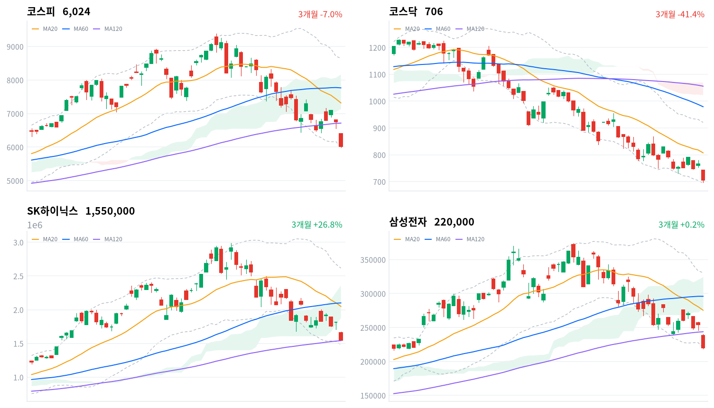

오늘 폭락의 동인은 명확히 반도체 단일 재료였다. 간밤 뉴욕증시에서 AI 투자 사이클 의구심에 엔비디아·ASML·샌디스크·마이크론이 동반 급락한 데 이어, 중국 창신메모리(CXMT)의 상하이 상장과 자체 개발 DUV 노광장비 연내 공급 발표가 메모리 경쟁 심화 우려를 직접 자극했다. 매도 사이드카에 이어 코스피가 6,213.51(-8.03%)까지 밀리며 올해 8번째 서킷브레이커가 발동될 만큼 매도 압력이 집중됐고, 결국 장중 저가 5,992.91까지 밀리며 6,000선이 무너진 뒤 6,023.66(-10.84%)으로 마감했다.
외국인이 코스피에서 4조5,009억원(당일 잠정)을 순매도했지만 개인(+4조3,152억원)·기관(+1,830억원)의 합산 매수(4조4,982억원)가 그 규모에 근접하며 지수 방어에 나섰다. 그럼에도 -10.84%라는 낙폭을 막지 못했다는 점은, 오늘 매도가 단순한 수급 불균형을 넘어 서킷브레이커를 유발할 만큼의 속도와 강도를 지녔다는 뜻이다.
코스피 비차익 프로그램 순매도(2조9,539억원)가 외국인 순매도 방향과 일치해 매도의 상당 부분이 방향성 자금이었음을 시사하는 한편, SK하이닉스 레버리지(4.15조)가 인버스(2.83조)를 웃돈 점은 개인의 저가 매수 심리가 여전히 살아있음을 보여준다. 원/달러 환율의 1,470원대 재진입은 외국인 매도와 같은 방향으로, 크로스에셋 정합성은 대체로 일관됐다.
다음 거래일에는 오늘 잠정치인 외국인·기관 수급이 확정되며 4조5,009억원 규모의 매도 강도가 유지되는지부터 확인해야 한다. 기술적으로는 코스피가 볼린저 하단(5,985.94)·오늘 저가이자 스윙 저점(5,992.91)을 다시 이탈하는지, 아니면 일목 전환선(6,708.55)·MA120(6,714.72)을 회복해 낙폭을 되돌리는지가 첫 관문이다.
SK하이닉스는 MA120(1,540,358원) 위에 턱걸이로 걸쳐 있어 이 지지선을 지키는지, 삼성전자는 볼린저 하단(220,043원)·스윙 저점(218,500원)을 지키는지가 반도체 대형주 반등 여부를 가늠할 확인 트리거다. 대외적으로는 미국 반도체주의 후속 흐름과 중국 노광장비발 경쟁 우려가 추가로 부각되는지, 대내적으로는 금융위의 레버리지 ETF 규제 검토가 구체화되는지가 다음 국면의 방향을 가를 변수다.
| 지수 | 종가 | 등락률 | 일중 고가 / 저가 |
|---|---|---|---|
| 코스피 | 6,023.66 | -10.84% | 6,413.57 / 5,992.91 |
| 코스닥 | 705.85 | -7.72% | — |
코스피는 전일 종가(6,755.75) 대비 갭하락 출발해 시가 6,400.27로 개장했고, 개장 직후 이날 고가(6,413.57)를 찍은 뒤 곧바로 낙폭을 키웠다. 09시 6,365.71, 09시30분 6,262.31, 10시 6,236.22로 미끄러지며 오전 초반부터 매물이 쏟아졌다.
이 매도 압력은 10시13분경 코스피가 6,213.51(-8.03%)까지 밀리며 올해 8번째 서킷브레이커(1단계) 발동으로 이어졌다 — 30분봉 기준 10시30분 수치(6,212.26)가 이 구간에 해당한다. 앞서 장 초반에는 유가증권·코스닥 시장에 매도 사이드카도 잇따라 발동됐다.
서킷브레이커 이후에도 낙폭은 진정되지 않아 11시 6,152.96, 11시30분 6,137.22, 12시 6,078.87, 12시30분 6,050.66까지 내리 밀렸다. 13시 한때 6,108.62로 소폭 반등했으나 되돌림은 오래가지 못했고 13시30분 다시 6,048.25로 되밀렸다.
오후에도 14시 6,092.21, 14시30분 6,038.87로 등락을 거듭하다 이날 저가 5,992.91까지 밀리며 6,000선이 무너졌는데, 이는 30분봉 종가 중 최저치인 15시30분(6,023.63)보다도 낮아 그 사이 어느 시점에 형성된 것으로 보인다. 장 막판에는 낙폭을 소폭 되돌리며 15시30분 6,023.63을 거쳐 6,023.66(-10.84%)으로 거래를 마쳤다.
코스닥은 개별 30분봉 데이터가 없어 장중 궤적을 그릴 수는 없지만, 705.85(-7.72%)로 마감해 약 1년3개월 만에 700선에 근접했다. 코스피보다는 낙폭이 작았지만 두 시장 모두 역대급 하락률을 기록한 하루였다.
일중 궤적은 코스피 30분봉 기준이며 코스닥 일중 고가·저가·30분봉은 이번 데이터 파이프라인에 미포함. 촉매 배경은 파이낸셜뉴스·헤럴드경제·Seoul Economic Daily·TradingKey·US News 보도 참조.

최근 3개월 일봉(캔들)에 이동평균(20·60·120일)·볼린저밴드(20일±2σ)·일목 구름대를 오버레이 — 코스피·코스닥·SK하이닉스·삼성전자, 상승 녹색·하락 적색.
오늘 급락으로 코스피·코스닥·SK하이닉스·삼성전자 네 종목 모두 일목 구름 아래로 밀려났다. 이동평균(20·60·120일)·볼린저밴드(20일±2σ)·일목 구름대를 종가 기준으로 계산한 조건부 시나리오이며, 코스피·코스닥은 지지선 자체가 오늘 새로 만들어진 저점이라 하방 확인 구간이 넓다.
코스피는 종가 6,023.66포인트로 MA20(7,317.01)·MA60(7,765.60)·MA120(6,714.72)을 모두 밑도는 혼조 국면으로, 특히 MA120 대비 괴리율이 -10.29%에 달할 만큼 단기 낙폭이 두드러진다. 볼린저 %b가 0.014로 하단(5,985.94)에 거의 붙어 있고, 오늘 저가(5,992.91)가 20일·60일 스윙 저점을 동시에 새로 썼다. 구름(7,138.17~8,165.11)과는 1,100포인트 넘게 떨어진 완연한 구름 아래 국면으로, 반등의 첫 관문은 일목 전환선(6,708.55)과 이와 근접한 MA120(6,714.72) 회복이다. 이 구간을 되찾으면 구름 하단(7,138.17)·MA20(7,317.01)을 거쳐 일목 기준선(7,689.25)·MA60(7,765.60), 구름 상단(8,165.11)까지 반등 여지가 있고 볼린저 상단(8,648.08)·스윙 고점(20일, 8,667.73)이 상단 목표가 된다. 반대로 볼린저 하단(5,985.94)·오늘 저가이자 스윙 저점(5,992.91)을 재차 이탈하면 이번 데이터 구간에서는 뚜렷한 하방 지지선이 확인되지 않는다.
코스닥은 종가 705.85포인트로 MA20(807.16)·MA60(979.01)·MA120(1,055.59)이 순서대로 위에 쌓인 뚜렷한 역배열로, MA120 대비 괴리율이 -33.13%에 달해 네 종목 중 낙폭이 가장 크다. 구름(1,022.24~1,068.94)과는 300포인트 넘게 떨어져 있어 추세 전환은 요원하다. 볼린저 %b는 0.053으로 하단(693.71)에 근접했고, 오늘 종가는 20일·60일 공통 스윙 저점(697.45)을 근소하게 웃돌아 이 저점을 지키는지가 우선 관찰 포인트다. 반등 시 첫 관문은 일목 전환선(764.57)이며, 이를 넘으면 MA20(807.16)·일목 기준선(838.52)을 거쳐 볼린저 상단(920.62)·스윙 고점(20일, 955.45), MA60(979.01)까지 반등 여지가 열린다. 반대로 스윙 저점(697.45)·볼린저 하단(693.71)을 이탈하면 추가 지지선을 확인하기 어려운 구간에 들어선다.
SK하이닉스는 종가 1,550,000원으로 MA20(2,048,200원)·MA60(2,100,133원)을 크게 밑돌지만 MA120(1,540,358원)은 근소하게(괴리율 +0.63%) 웃돌아 장기 지지선 위에 가까스로 걸쳐 있는 혼조 국면이다. 오늘 종가가 20일 스윙 저점(1,550,000원)과 같아 20일 신저가를 기록했지만, 60일 스윙 저점(1,281,000원)까지는 아직 거리가 있다. 볼린저 %b는 0.061로 하단(1,480,428원)에 근접했고, 구름(1,875,500~2,358,000원) 아래 완연한 하락 국면이다. 반등의 첫 관문은 일목 전환선(1,860,500원)이며, 이를 넘으면 구름 하단(1,875,500원)·MA20(2,048,200원)·MA60(2,100,133원)을 거쳐 일목 기준선(2,268,500원)·구름 상단(2,358,000원), 볼린저 상단(2,615,972원)·스윙 고점(20일, 2,742,000원)까지 반등 여지가 있다. 반대로 MA120(1,540,358원)·볼린저 하단(1,480,428원)을 내주면 최후 지지선인 60일 스윙 저점(1,281,000원)까지 밀릴 수 있다.
삼성전자는 종가 220,000원으로 볼린저 %b가 -0.0에 그쳐 하단(220,043원)에 사실상 닿아 있는 극단적 과매도 구간이다. 20일·60일 공통 스윙 저점(218,500원)과는 불과 1,500원 차이로, 이 저점을 지키는지가 최우선 관찰 포인트다. MA20(275,375원)·MA60(295,900원)을 크게 밑돌지만 MA120(243,654원)과는 -9.71%로 상대적으로 근접해 있어 장기 추세선 회복 가능성을 남겨뒀다. 구름(278,600~324,625원) 아래 완연한 하락 국면에서, 반등의 첫 관문은 MA120(243,654원)과 일목 전환선(251,500원)이며 이를 넘으면 MA20(275,375원)·구름 하단(278,600원)을 거쳐 일목 기준선(290,750원)·MA60(295,900원), 구름 상단(324,625원)까지 반등 여지가 있다. 반대로 볼린저 하단(220,043원)·스윙 저점(218,500원)을 이탈하면 추가 지지선이 확인되지 않는 구간에 들어선다.
기계적으로 계산된 조건부 기술 셋업이며 투자 권유가 아니다. 레벨은 익일 종가로 갱신된다.
| 순매수 (억원) | 개인 | 외국인 | 기관 |
|---|---|---|---|
| 코스피 | +43,152 | -45,009 | +1,830 |
| 코스닥 | +480 | +860 | -1,345 |
코스피에서는 외국인이 4조5,009억원(당일 잠정)을 순매도하며 패닉셀에 가까운 매도 압력을 쏟아냈다. 전 거래일(7/27)에도 2조8,811억원을 순매도했던 터라 이틀 연속 대규모 매도가 이어졌고, 오늘은 그 규모가 하루 만에 1.6배 넘게 불어났다.
반면 개인이 4조3,152억원(당일 잠정)을 순매수하며 외국인 매도 물량의 상당 부분을 받아냈고, 기관도 1,830억원(당일 잠정) 순매수를 보탰다. 개인·기관 순매수 합산(4조4,982억원)이 외국인 순매도(4조5,009억원)에 근접했음에도 코스피는 -10.84%라는 역대급 낙폭을 피하지 못해, 오늘만큼은 수급 방어의 한계가 뚜렷하게 드러났다.
코스닥에서는 외국인이 860억원, 개인이 480억원을 각각 소폭 순매수(당일 잠정)한 반면 기관이 1,345억원(당일 잠정) 순매도해 매도 우위를 보였다. 코스피와 달리 코스닥은 외국인마저 순매수로 돌아섰다는 점이 눈에 띄지만, 순매수 규모 자체가 크지 않아 -7.72% 낙폭을 방어하기엔 역부족이었다. 세 시장 수치 모두 당일 잠정치인 만큼, 익일 확정 과정에서 외국인 매도 강도가 얼마나 유지되는지 재확인이 필요하다.
| 순매수 (억원) | 차익거래 | 비차익거래 | 전체 |
|---|---|---|---|
| 코스피 | +3,556 | -29,539 | -25,983 |
| 코스닥 | +18 | -5 | +13 |
코스피 프로그램 매매는 비차익거래가 2조9,539억원 순매도를 주도했고 차익거래는 오히려 3,556억원 순매수를 기록해 방향이 엇갈렸다. 비차익거래는 선물·현물 가격차를 노린 기계적 재정거래가 아니라 바스켓 단위의 방향성 매매를 반영하는데, 이 대규모 매도 방향이 외국인 순매도(4조5,009억원, 당일 잠정)와 일치해 오늘 외국인 매도의 상당 부분이 비차익 프로그램을 경유한 실제 포지션 조정이었을 가능성을 시사한다. 차익거래가 순매수로 돌아섰다는 점은 급락에 따른 프로그램 매도 물량이 비차익 쪽에 훨씬 더 집중됐음을 뒷받침한다.
코스닥 프로그램은 전체 순매수가 13억원에 불과해 방향성이 뚜렷하지 않았다. 비차익 5억원 순매도와 차익 18억원 순매수가 서로 상쇄되며, 코스피와 달리 코스닥에서는 프로그램 매매가 오늘 낙폭의 주된 동인은 아니었던 것으로 보인다.
수급·프로그램 매매 수치는 발행 시점 기준 당일(2026-07-28) 잠정치이며, 익일 확정 과정에서 조정될 수 있다.
| 종목·그룹 | 구분 | 거래대금 |
|---|---|---|
| SK하이닉스 | 개별종목 | 11.75조 |
| 삼성전자 | 개별종목 | 9.12조 |
| SK하이닉스 레버리지 | 단일종목 롱 ×4 | 4.15조 |
| SK하이닉스 인버스 | 단일종목 숏 ×1 | 2.83조 |
| 지수 레버리지 ETF | 지수 롱 ×3 | 2.48조 |
| 지수 인버스 ETF | 지수 숏 ×6 | 2.25조 |
| KODEX 200 | 지수 ETF | 2.05조 |
| 삼성전자 레버리지 | 단일종목 롱 ×2 | 1.11조 |
| 삼성전자우 | 개별종목 | 0.67조 |
| NAVER | 개별종목 | 0.50조 |
거래대금 최상위는 SK하이닉스(11.75조)와 삼성전자(9.12조)가 1·2위를 나란히 차지해, 간밤 미국발 반도체주 급락과 중국의 메모리 굴기 우려가 국내 반도체 대형주로의 거래를 집중시켰다. 두 종목과 각각의 단일종목 레버리지·인버스 ETF까지 합산하면 반도체·전자 대형주 관련 거래대금은 약 29조원에 달한다.
방향성 심리를 보면 SK하이닉스는 레버리지(롱, 4.15조)가 인버스(숏, 2.83조)를 웃돌아, 폭락장 속에서도 개인 투자자의 상승 베팅(역발상 매수)이 하락 베팅보다 우위였다. 지수 레버리지 ETF(2.48조)도 지수 인버스 ETF(2.25조)를 소폭 앞서 같은 흐름을 보였는데, 이는 오늘 개인이 코스피 현물에서 4조3,152억원을 순매수(당일 잠정)한 방향과 일치한다.
KODEX 200(2.05조)·삼성전자 레버리지(1.11조)·삼성전자우(0.67조)·NAVER(0.50조)가 뒤를 이었다. 대형 지수·반도체 ETF에 거래가 집중된 만큼, 오늘 폭락장에서도 자금은 개별 종목보다 지수·반도체 관련 상품으로 쏠렸다.
거래대금은 정규화 집계 — 같은 기초자산 ETF를 방향별로 묶고 해외지수 ETF는 제외했다. 원자료는 백만원 단위이며 표에는 조원으로 환산했다.
대표 섹터 ETF 기준 1일 수익률은 반도체가 -13.85%로 낙폭이 가장 컸고, 로봇(-9.23%)·건설(-8.82%)·증권(-8.70%)·2차전지(-8.30%)·조선(-7.93%)이 뒤를 이었다. 헬스케어(-2.68%)가 상대적으로 낙폭이 가장 작았지만, 12개 섹터 전부가 마이너스를 기록해 방어에 성공한 섹터는 단 한 곳도 없었다.
세부 GICS 업종(kr_industry.json, 60개) 기준으로도 leading 플래그가 true로 표시된 업종이 하나도 없어, 오늘은 특정 업종이 상승을 주도하는 국면이 아니라 전방위 동반 하락 장세였음을 데이터가 뒷받침한다. 다만 이 60개 세부 업종 목록에는 반도체와반도체장비 항목 자체가 포함돼 있지 않아, 대표 섹터 ETF에서 확인된 반도체(-13.85%) 낙폭을 세부 업종 breadth로 교차 검증하기는 어려웠다.
낙폭이 가장 작았던 담배(-0.49%)·다각화된통신서비스(-0.96%)는 각각 종목 수가 1개·3개에 불과해 breadth가 0.0으로 나타나는 등 통계적 의미를 부여하기 어려운 극소표본이다. 반면 1,533개 종목을 아우르는 최대 규모 그룹인 '기타'는 -5.95% 하락했음에도 22.1%(339종목)가 상승을 지켜, 소규모 표본의 '선방'보다 오히려 이 대규모 그룹의 breadth가 오늘 장세의 폭을 더 신뢰성 있게 보여준다.
1D~1Y 막대는 대표 섹터 ETF 수익률, 세부 업종 breadth는 60개 GICS 업종 상승 종목 비중 기준(오늘은 반도체와반도체장비 항목 미포함).
| 테마 | 등락률 |
|---|---|
| CCTV＆DVR | +0.04% |
| 기업인수목적회사(SPAC) | -0.11% |
| 보안주(물리) | -0.68% |
| 리츠(REITs) | -1.34% |
| 마리화나(대마) | -1.60% |
| 보안주(정보) | -1.93% |
| 주류업(주정, 에탄올 등) | -1.93% |
| 화학섬유 | -2.10% |
| 음성인식 | -2.15% |
| 바이오인식(생체인식) | -2.21% |
| 수산 | -2.29% |
| 아프리카 돼지열병(ASF) | -2.37% |
| 골판지 제조 | -2.40% |
| 백신/진단시약/방역(신종플루, AI 등) | -2.46% |
| 건강기능식품 | -2.46% |
테마 랭킹 최상위조차 CCTV＆DVR(+0.04%)에 그쳐 사실상 보합 수준이었고, 기업인수목적회사(SPAC, -0.11%)·보안주(물리, -0.68%)·리츠(REITs, -1.34%) 등 방어적 성격의 테마가 상대적으로 선방했다. 이는 오늘 장이 특정 재료가 주가를 밀어올리는 국면이 아니라 전방위 매도 속에 낙폭이 작은 종목을 찾기도 어려운 패닉장이었음을 보여준다.
AI·반도체 관련 테마는 이번 랭킹 상위 15개 안에 단 하나도 포함되지 않았다. 간밤 미국발 반도체주 급락과 중국 CXMT 상하이 상장·DUV 노광장비 자체 개발 발표가 겹친 결과로, 관련 테마들이 오늘 순위 하위권으로 밀려났을 개연성이 크지만 이번 데이터에는 순위권 밖 수치가 포함돼 있지 않아 구체적인 등락률은 확인할 수 없다.
마리화나(대마, -1.60%)·주류업(-1.93%)·화학섬유(-2.10%)도 상대적으로 낙폭이 작았지만 모두 마이너스권이라는 점에서, 오늘은 '주도 테마'보다는 '가장 덜 맞은 테마'를 가리는 하루에 가까웠다.
테마 랭킹·등락률은 kr_theme.json 기준(상위 15개).
| 종목 | 등락률 | 비고 |
|---|---|---|
| SK하이닉스 | -14%대 | 거래대금 1위(11.75조), 미국발 반도체 급락·중국 메모리 굴기 우려 직격 |
| 삼성전자 | -13%대 | 거래대금 2위(9.12조), 동일 재료 직격 |
| 삼성전자우 | - | 거래대금 상위(0.67조), 등락률 데이터 미확인 |
| NAVER | - | 거래대금 상위(0.50조), 등락률 데이터 미확인 |
오늘의 충격은 반도체 양대장에 집중됐다. SK하이닉스는 -14%대까지 급락하며 거래대금 1위(11.75조)에 올랐고 삼성전자도 -13%대로 밀리며 거래대금 2위(9.12조)를 기록했다. 간밤 뉴욕증시에서 엔비디아(-4.99%)·ASML(-5.80%)·샌디스크(-11.02%)·마이크론(-2.25%)이 동반 급락했고 SK하이닉스 ADR도 -7.47% 밀린 데 이어, 중국 창신메모리(CXMT)의 상하이 상장과 자체 개발 DUV 노광장비 연내 공급 발표가 메모리 경쟁 심화 우려를 직접 자극한 결과다.
일본 키옥시아(Kioxia)도 -18%대로 급락해 한·미·일 메모리·장비 밸류체인 전반에 매물이 동시에 쏟아졌음을 보여준다. 다만 전문가들은 중국의 노광장비가 첨단 공정에 실제 적용되기까지 상당한 시간이 필요하다고 평가해, 오늘의 낙폭이 펀더멘털 재평가라기보다 심리적 쇼크에 가깝다는 시각도 있다.
삼성전자우(0.67조)·NAVER(0.50조)도 거래대금 상위에 이름을 올렸으나 구체적 등락률은 이번 데이터에 포함되지 않았다.
종목별 등락률은 research_notes.md에 확인된 항목(SK하이닉스·삼성전자)만 근사치로 표기했으며, kr/data 원자료에는 개별 종목 시세가 포함되지 않는다.
원/달러 환율이 1,470원대에 재진입하며 통화 약세 압력이 뚜렷했다. 코스피에서 외국인이 4조5,009억원(당일 잠정)을 순매도한 것과 같은 방향으로, 외국인 매도 자금의 역송금(달러 환전) 수요가 원화 약세를 자극했을 개연성이 크다.
이번 데이터 파이프라인에는 국고채 금리 수치가 포함되지 않아 채권시장 반응은 확인할 수 없었다. 다만 주식시장의 극단적 변동성은 통상 안전자산 선호로 이어지는 만큼, 국고채 금리는 하락(가격 상승) 압력을 받았을 가능성이 있다.
환율은 비즈니스코리아 보도 인용(구체 수치는 보도에 명시되지 않음). 국고채 금리는 데이터 미포함.
이억원 금융위원장은 오늘 폭락장 이후 단일종목 레버리지 ETF에 대해 투자요건 추가 상향, 개인별 투자한도 설정 등 보완책을 검토하겠다고 밝혔다. 변동성이 진정되지 않을 경우 규제를 강화하겠다는 신호로, 오늘 거래대금 상위에 SK하이닉스 레버리지(4.15조)·인버스(2.83조)가 나란히 오른 것과 무관하지 않은 발언이다.
중국의 이머전 DUV 노광장비 자체 개발·연내 공급 발표와 창신메모리(CXMT)의 상하이 상장은 한국 메모리 산업의 중장기 경쟁 지형에 영향을 줄 수 있는 구조적 변수다. 단기적으로는 패닉성 매도를 촉발했지만, 전문가들이 첨단 공정 적용까지 상당한 시간이 필요하다고 평가한 만큼 후속 정책 대응(첨단산업 보조금·수출통제 공조 등) 여부가 다음 국면을 가를 변수로 남는다.
밸류업 프로그램·금융투자소득세·대주주 요건·상법 개정·한은 기준금리·통상관세·부동산 관련 정책은 이번 회차 리서치에서 당일 시황과 직접 연동된 새 소식이 확인되지 않았다. 반도체발 글로벌 쇼크가 오늘 하루를 지배한 압도적 단일 동인이었다.
정책 배경은 파이낸셜뉴스·뉴스핌·헤럴드경제·비즈니스코리아 보도 인용.